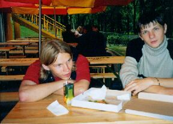
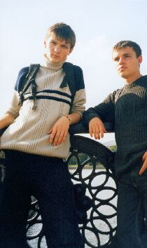
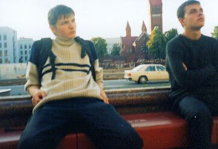

|
Минск
Июль 15-17, 2004
(ж/д вокзал)
Мой дом. Я (nitroboy aka finn), Swindler (aka tier), Soogio ждём поезда. Нужно пока посметреть фильм.
Смотрим, пьём пиво. Что-то на сон потянуло. Так, уже 2:15 (или около того), пора выходить.
Собрались, я мысленно попращался с компом и все хором пошли на станцию. Вот и поезд.
Как только зашли в поезд, сон пропал. Я достал листы и карандаш, хотел писать что-нибудь,
но вырубили свет.
(Минск)
Приехали.
Куда мы потом пошли? По-моему по магазинам. Целый день шлялись. Обошли буквально весь центр города.
Центральный детский парк имени М. Горького. Красота!

Парк имени М. Горького (Venom, finn)

Проспект Ф. Скарины (finn, Soogio)

Костёл (finn, Soogio)
Поехали в парк Челюскинцев (метро уже запарило!). Это и есть те атракционы? Нда, не густо...
Ни одного магазина с экстремальной музыкой не нашли. Поехали к тёте Soogio. Помылись (вещь!),
покушали, и пошли встречать ночной город. Походили и решили ночь провести в клубе. Мы немного
опоздали, но нас пустили, благо места были. Посидел я немного в нете, потом начал смотреть фильмы.
Начал с "Послезавтра", прошло 15 минут и я уснул. Как же мне было тяжело поднимать голову с клавы,
когда меня начал раздражать шум толпы, которая уже собиралась домой. Опять пошли к тёте.
Покушали и спа-а-ать :). Проснулись. Так, до поезда нужно ещё чем-то заняться.
Закупились немнго на дорогу и пошли опять искать магазины. Мне очень понравилось в парке на
Ленина. Там под вечер неферы начал собираться.
Пинск. Сфоткались. Попрощались с Soogio и пошли с tier'ом на попутку.
finn ©
|